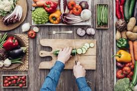

Gordom Ramsay
Gordom Ramsay- HOME
- VIDEOS
- PLAYLIST
- COMMUNITY
- CHANNELS
- ABOUT
- Uploads
- PLAY ALL
New Game
25k views - 14 hours ago
How to become a millionaire?
25k views - 14 hours ago
Fake news
25k views - 14 hours ago
How to start a travel youtube channel
1M views 12 hours ago
- Popular Uploads
- PLAY ALL
FOTOTRAVEL
Friday DYI
4.8M views - 3 years ago
MAKE UP FUN
Low cost makeup haul
2M views - 1 week ago
KATIA KENZ
Spring Haul
250K views - 4 weeks ago

HEALTHY DIARIES
HEALTHY RECIPE BLOG ep444
T120K views - 3 weeks ago